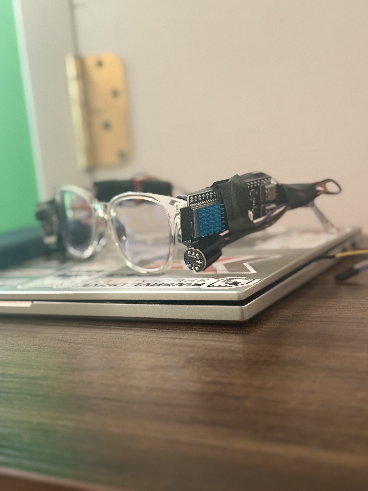

Take any regular pair of glasses and upgrade them with an ESP-32 camera, and a microphone for a voice controlled AI experience. On-device processing for real-time object recognition, scene description, and voice interaction.

Clone the repository to build locally.
git clone https://github.com/chromemilk/Rachel-Vision(pre-build) download Arduino IDE and related packages
1. Obtain required materials (listed above)
2. Wire microphone to the ESP-32 S3 Module according to the firmware code (remember L/R should be tied to GND)
3. Wire ESP-32 CAM to the adapter according to the firmware code
4. Flash ESP-32 S3 Module with the provided "mic" firmware
5. Flash ESP-32 CAM Module with the provided "cam" firmware
6. Attach hardware to glasses via tape or 3D-printed parts
(pre-use) Obtain relevant API keys (look in Python script) and place them in a .env file in the local directory
1. Have a local network set up for all the devices to connect to
2. Power on the Rachel Vision device
3. Run provided server Python script
4. Interact with the device using the camera and microphone (say "Rachel, what is this?" to trigger a response)